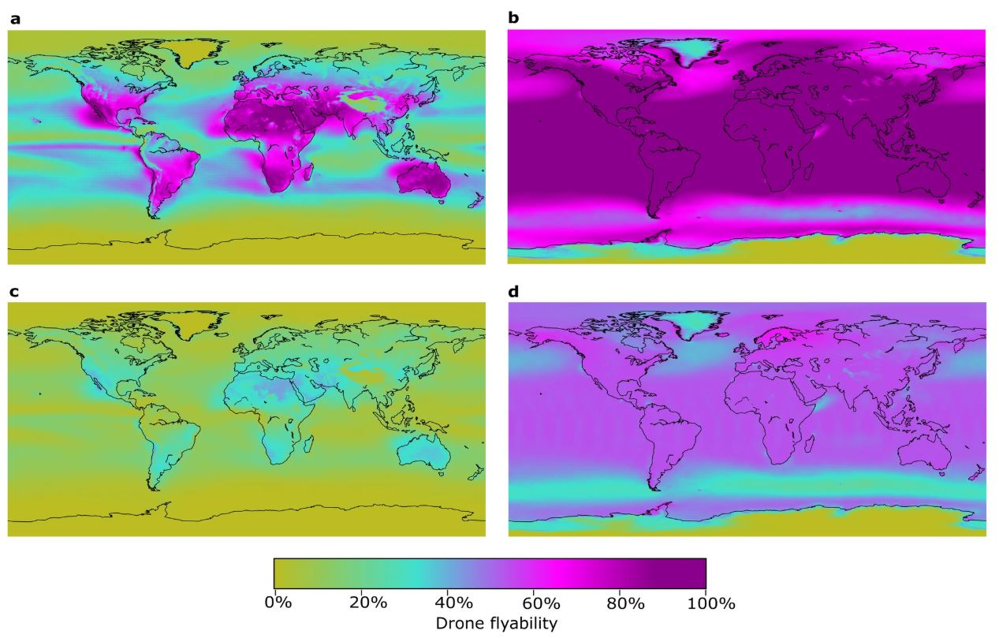

Global Drone Flyability Mapping
Mapping drone flyability across the globe using ERA5 weather data and various drone's manufacturer SPECs.
I am a GISer focused on reducing anthropogenic greenhouse gas emissions and optimizing emissions detection technologies. I obtained my PhD from the Centre for Smart Emissions Sensing Technologies and worked as a Postdoctoral Researcher at the UbiSensing & AI Lab at the University of Calgary. My research involves using various modeling approaches and building digital twins to simulate how different emissions detection and quantification technologies perform under real oil and gas field conditions. This work helps improve understanding of their performance and optimal deployment strategies. I also develop frameworks to integrate multi-scale emissions data to estimate and reconcile emissions from oil and gas facilities.
Mapping drone flyability across the globe using ERA5 weather data and various drone's manufacturer SPECs.
Mapping methane emissions observation coverage of low-earth orbit satellites across the globe using TROPOMI's data.
A toolkit for simulating travel of leak inspection strategies and evaluating their effectiveness.

Using DRIP to find the optimal survey route for vehicle-based gas sensing system.
This tool is still in development. It aims to automatically screen a region and detect and quantify emissions using TROPOMI's data.

The open-source modeling framework for exploring the effectiveness of methane leak detection programs.
A event-based framework embeded with ISO/OGC standards to ultilize emission event to estimate annualized emissions.

This project aims to integrate quantifications from point-source plumes and regional estimates from satellites to directly address the underestimation of short-duration, large-emission events in emissions estimation.
Open to collaborations, consulting, and project partnerships in emissions management.